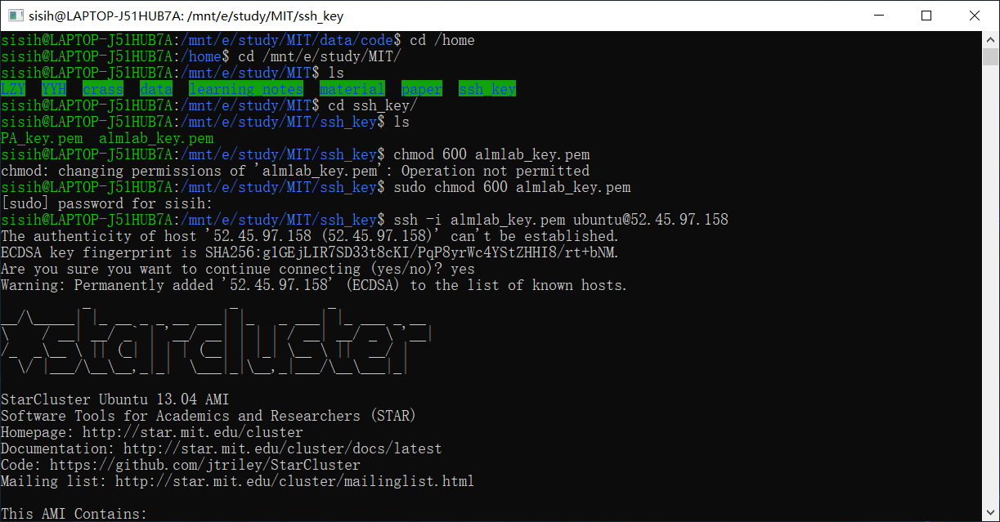

Windows Subsystem for Linux
想来想去还是喜欢Windows系统，换Mac太贵了又没什么很好的性价比，直接装Linux系统作为主系统也不合适，Win还是有其优越之处，再说本地上用Linux命令也不会去跑很大的程序，简单点就好了不必作为电脑主系统。
原先是用虚拟机，但有一个问题，文件同步太不方便。现在试了WSL，windows下的Linux子系统，至少初体验不错。
Tips: shift+右键就可以在当前目录进入Linux终端，超棒的哎！
WSL是使本机Linux ELF64二进制文件能够在Windows上运行的组件的集合。 它包含用户模式和内核模式组件。 它主要包括：
- 处理Linux实例生命周期的用户模式会话管理器服务
- 通过翻译Linux系统调用来模拟Linux内核的Pico提供程序驱动程序（lxss.sys，lxcore.sys）
- 托管未修改的用户模式Linux的Pico进程（例如/ bin / bash）
用户模式Linux二进制文件和Windows内核组件之间的空间就是神奇的地方。 通过在Pico进程中放置未修改的Linux二进制文件，我们使Linux系统调用可以定向到Windows内核。 lxss.sys和lxcore.sys驱动程序将Linux系统调用转换为NT API并模拟Linux内核。
安装WSL
Win+R打开powershell，以管理员身份运行
1 | Start-Process powershell -Verb runAs |
运行命令
1 | Enable-WindowsOptionalFeature -Online -FeatureName Microsoft-Windows-Subsystem-Linux |
重启，打开windows应用商店，下载需要的Linux系统。
注册unix account，我的Ubuntu默认目录在这里
C:\Users\lenovo\AppData\Local\Packages\CanonicalGroupLimited.UbuntuonWindows_79rhkp1fndgsc\LocalState\rootfs\home
优化
- 将默认国外的源更改为阿里云的源，提高运行速度
备份
1 | sudo cp /etc/apt/sources.list /etc/apt/sources.list.bak |
编辑源文件
1 | sudo vim /etc/apt/sources.list |
添加源
1 | deb http://mirrors.aliyun.com/ubuntu/ bionic main restricted universe multiverse |
更新升级
1 | sudo apt-get update |
- 在当前目录打开PowerShell或者WSL终端
在资源管理器的目标目录的空白位置，Shift+鼠标右键，在菜单栏中点击相应终端，启动后的路径即为当前目录。
Win10自带的PowerShell也是可以启动WSL，输入bash
所有的Win分区都在mnt文件夹下
1 | ls /mnt |
从此以后，可以ssh进入服务器啦yeah！超开心！

emmm发现一个bug，chmod可能不支持分区文件，后来我把key放到根目录了……可能是因为
ntfs分区不支持linux权限系统，挂载后默认是777权限
Anyway, cheers！
后来发现还不太稳定，不过依旧有这个需求哈哈哈